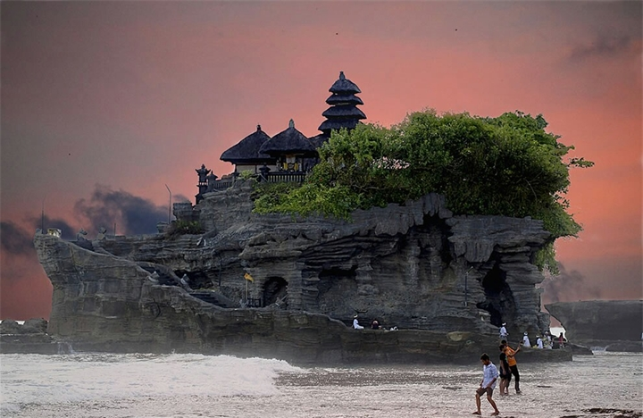
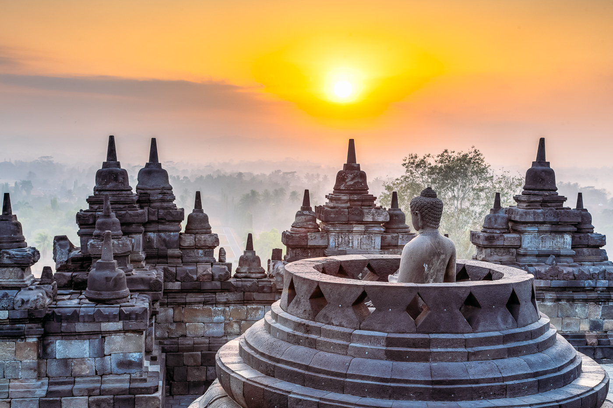
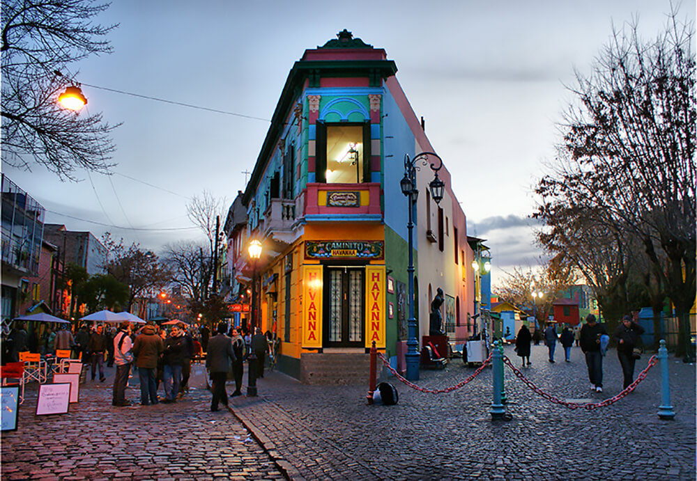

OUR FAVORITES
Look at these exotic places

Tanah Lot, Indonesia.
Tanah Lot means "Land [in the] Sea" in the Balinese language. Located in Tabanan, about 20 kilometres (12 mi) from Denpasar, the temple sits on a large offshore rock which has been shaped continuously over the years by the ocean tide.

Borobudur, Indonesia.
Borobudur, or Barabudur is a 9th-century Mahayana Buddhist temple in Magelang, Central Java, Indonesia, and the world's largest Buddhist temple. The temple consists of nine stacked platforms, six square and three circular, topped by a central dome.

Buenas Aires, Argentine.
Buenos Aires is Argentina’s big, cosmopolitan capital city. Its center is the Plaza de Mayo, lined with stately 19th-century buildings including Casa Rosada, the iconic, balconied presidential palace